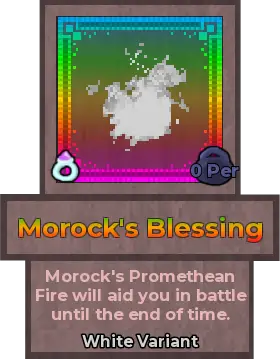
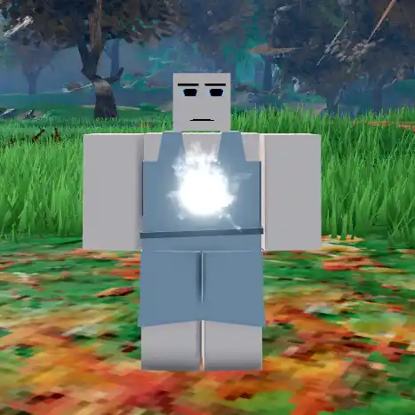
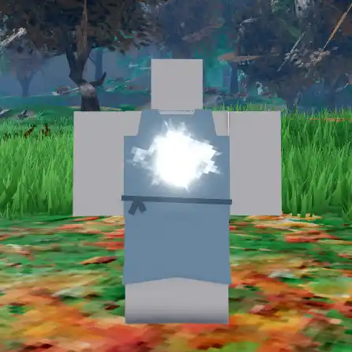
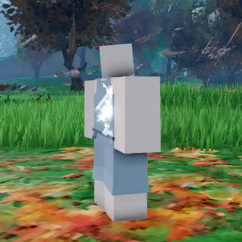
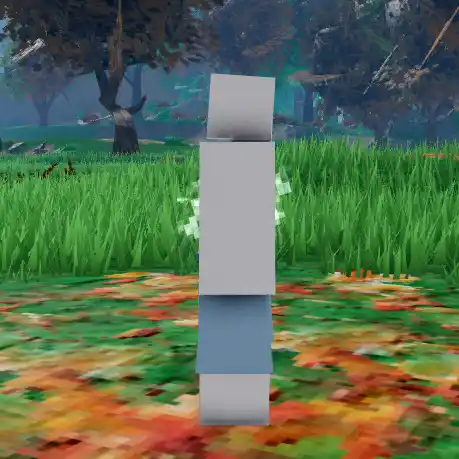
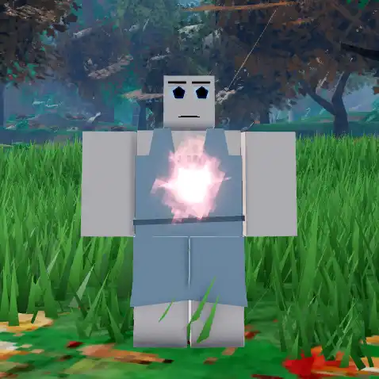
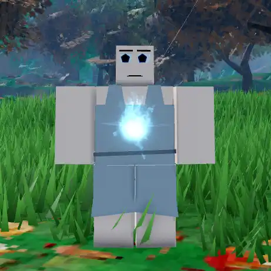
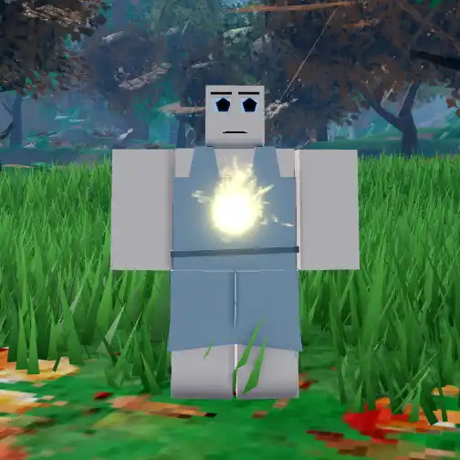

Morock's Blessing

Info
Slot: Accessory
Recolorable?: Yes
Unique Colors: None
Particle Effects: Yes
Sound Effects: None
Owner: None
Appearance & Effects
In-game description: Morock's Promethean Fire will aid you in battle until the end of time.
Morock's Blessing is a flame that appears at the center of the player's torso. It rhythmically pulses, spitting out larger flames and glowing brighter for a period of time during each pulse. The flame can be seen from the front and back of the torso, but is blocked from view when looking at the player from the sides. Morock's Blessing is recolorable.
Inspiration
Morock's Blessing was inspired by the corresponding Morock's Blessing from Arcane Adventures, in which it is a legendary accessory obtained by touching Morock's skeleton after following The Bermuda Locket to it's resting place. Morock's Blessing is one of multiple relics inspired by AA, the others being the Sunken Warrior Set and the Forgotten Twinbands. Morock's Blessing is the 30th relic to be added to Taleara.

Morock's Blessing viewed from the front

Viewed from the back
Image Gallery

Viewed at an angle, where it can only be partially seen

Viewed from the side, where it is nearly invisible

Colored red

Colored blue

Colored yellow